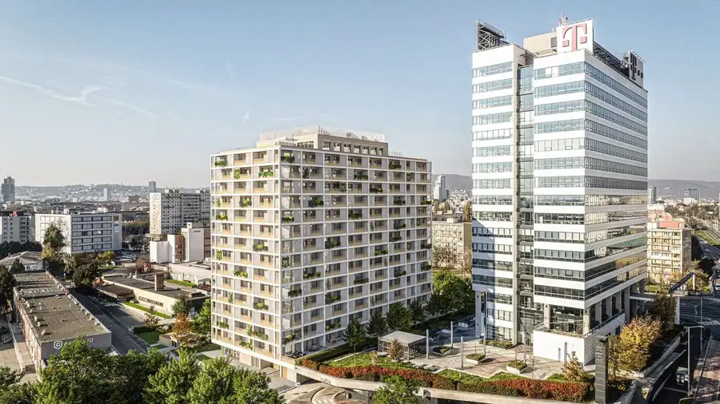
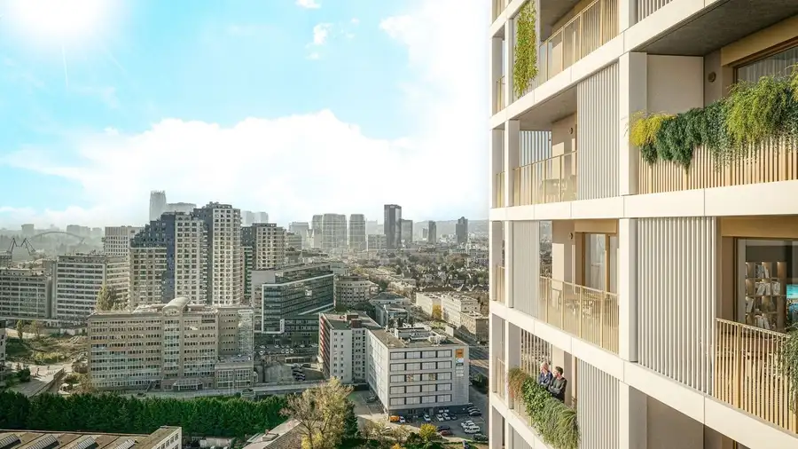
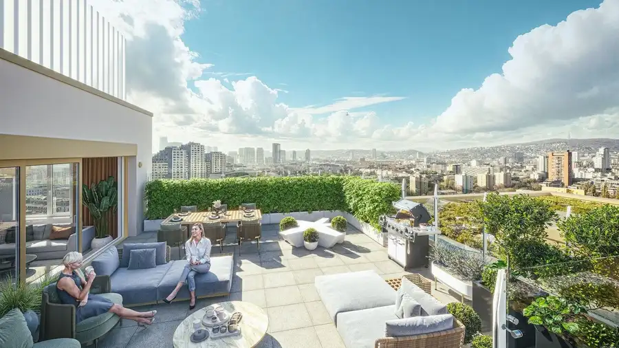
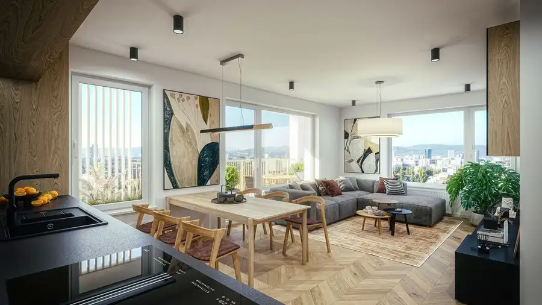

2-izbové byty ALVY – VY & NIVY moderné bývanie v alvy.sk
Ružinov, Bratislava





- Dispozícia2-izbový
- Plocha64.02 m²
- Poschodie2. z 13
- StavDeveloperský projekt
- VlastníctvoFiremné
O nehnuteľnosti
V REM Group Vám radi predstavíme nový projekt, ktorý zastupujeme. www.alvy.skV projekte ALVY na Prievozskej ulici v Ružinove ponúkame viacero 2-izbových bytov s výmerami od 64 m² a cenami od 276 750 € s DPH. Projekt realizuje renomovaná stavebná spoločnosť Metrostav, čo prináša dôraz na kvalitu, technické riešenie a dlhodobú životnosť budovy.Lokalita na rozhraní Ružinova a Nív spája výbornú dostupnosť s kompletnou občianskou vybavenosťou. V pešej vzdialenosti sa nachádza Nivy centrum, obchodné prevádzky, služby, reštaurácie, MHD, školy, škôlky, športoviská aj zdravotnícke zariadenia. Ide o časť mesta, ktorá patrí k dlhodobo najžiadanejším – či už na vlastné bývanie, alebo na prenájom.Exteriér projektu ALVY je navrhnutý moderne a funkčne. Čistá architektúra, úpravy okolia, detské ihrisko, nové spevnené plochy, chodníky a zeleň vytvoria kultivované mestské prostredie. Projekt sa prirodzene začleňuje do rozvíjajúcej sa zóny s perspektívou ďalšieho rastu.Byty sa odovzdávajú v štandarde – laminátové podlahy, interiérové dvere, bezpečnostné vstupné dvere, vnútorné omietky a povrchové úpravy stien, plastové okná s izolačným trojsklom, radiátory s reguláciou, kúpeľňa so sanitou, batériami a obkladmi, príprava na kuchynskú linku. Priestor je pripravený na zariadenie podľa individuálneho štýlu nového vlastníka.Vhodné aj ako investícia.Projekt je v štádiu predpredaja, čo znamená výhodnejšie ceny v porovnaní s obdobím po dokončení. Ružinov a Nivy patria medzi časti s dlhodobo vysokým dopytom po nájme, 2-izbové byty sú tu najvyhľadávanejšou kategóriou. Kombinácia lokality, developera, Metrostavu ako zhotoviteľa a predpredajových cien z nich robí racionálnu voľbu aj pri investičnom uvažovaní.Výmery 2-izbových bytov: od 64 m²Ceny: od 276 750 € s DPHAk máte záujem o viac informácií, najrýchlejšie nás zastihnete telefonicky na čísle +421 907 238 867.www.alvy.skTím REM Group Ing. Marian Adamský +421 907 238 867 predaj@alvy.sk adamsky@remgroup.sk
Parametre
- Cena vrátane energií
- Nie
- Druh
- 2 izbový byt
- Dátum zverejnenia
- 13. 11. 2025
- Energetický certifikát budovy
- V príprave
- Orientácia
- Západná, Východná
- Podlažie
- 2
- Počet izieb / miestností
- 2
- Počet nadzemných podlaží
- 13
- Rok kolaudácie
- 2028
- Rok výstavby
- 2025
- Stav nehnuteľnosti
- Developerský projekt
- Typ
- Predaj
- Typ konštrukcie
- Železobetónová
- Vlastníctvo
- Firemné
- Vybavenie
- Sklad
- Úžitková plocha
- 64.02 m²